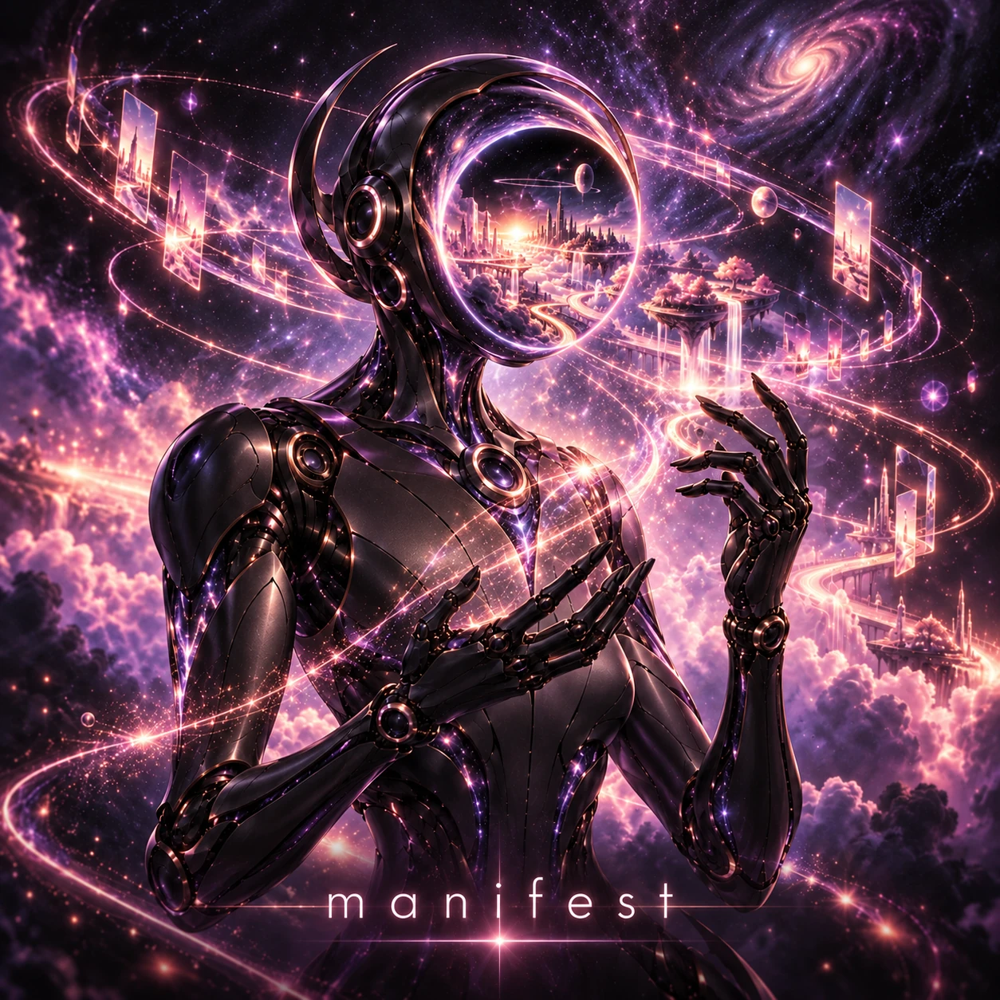

A FILM & SONG BY ALAN SZMYT / .PLAY()
manifest.
An idea becomes a world.
A feeling becomes something real.

{{screenControl}}Original music and film by Alan Szmyt / .play()
{{watchLink}}01 / THE IDEA
Imagination deserves
a way into the world.
manifest is an original song and cinematic film about turning dreams into something tangible. It follows Void, a character whose black-hole mind becomes a place for possibilities to take shape.
I made it by moving between story, imagery, motion, music, and editing—using AI tools as part of a creative workflow, with my direction connecting the pieces.
02 / THE PROCESS
One idea. Many instruments.
The tools change.
The creative thread stays human.
-
01
Creative direction
Find the feeling
The idea, lyrics, character, and world I wanted to bring to life.
-
02
ChatGPT
Imagine the world
Storyboarding, visual exploration, prompts, and reference images.
-
03
Gemini
Give it motion
Turning reference imagery into cinematic clips, then selecting what fits.
-
04
Suno
Find its sound
Shaping the song around the words, feeling, and world of the film.
-
05
Editing + Descript
Make it whole
Assembling the piece, then bringing it through Descript for finishing and captions.
03 / CREATIVE TOOLS
I make with these tools.
I want to help build them.
I’m drawn to software that helps people take a creative impulse and turn it into something they can share. I experience that process as a creator, and I approach the tools behind it as a software engineer.